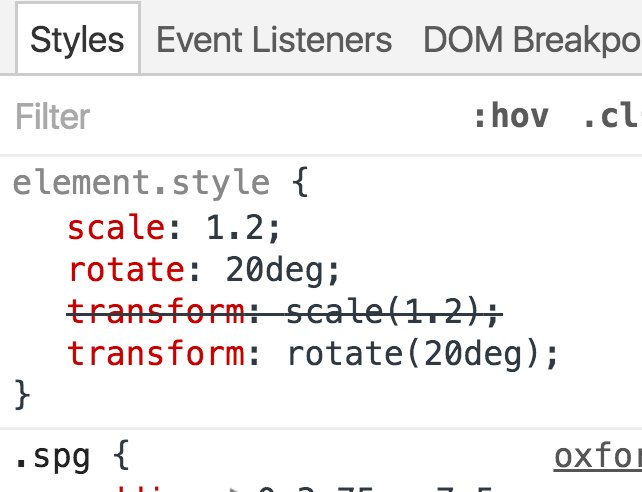

DevTools
An Animated Journey 2016
-
@umaar - for more tips
Dev Tips
weekly gif showcasing a developer-friendly tip
101 tips posted so far!
What we will cover
How DevTools can help with:
- Animation
- JS Debugging
- Accessibility
- Smaller bits and pieces
- A bit of Node.js debugging
Elements
Style modifications
outline: 1px solid red;
(Side note)
Independent CSS Transform Properties
Toggle element classes
One click to remove the "col-1-2" class
Layout Editor (WIP)
Next level layout editing
Layout Editor
- Hover to see the current margin/padding value
- Drag to modify
- Guidelines help with alignment
Layout Editor Ideas
- What if you set up workspaces and your layout changes persisted to disk?
- What if layout editing worked on touch devices?
- What if 'in-page' editing allowed you to control all the CSS for an element?
Animation
Animation Recording
Animation Inspecting
Animation Debugging - 2 parts
- Animation Recorder
- Animation Inspector
Recorder (pt 1)
A timeline view of recorded animations
Hover to preview, discard any animations you don't care about
Recorder (pt 2)
With the animations pane open, all animations/transitions are captured.
Inspector
- A breakdown of the animations and animatable properties
- Click and drag to change animation-delay and animation-duration
- But wait, there's more!
Web Animation API
Access an inspected animation through JavaScript
Visual Animation Debugging shines with complex animations
Keyframe Editing
Network
Request Blocking
Filmstrip
A short debugging story
- DOM to Event Listeners
- Live Edit
- Blackboxing
1. DOM to Event Listeners
Debugging from the outside in
2. Live edit
No page reload necessary
3. Blackboxing
Goodbye bundle-c718fec0.min.js
- DOM to Event Listeners
- Live Edit
- Blackboxing
Live Edit
- Raw text changes are injected back into V8
- Comparisons are made between new.js and old.js
- V8 compiles the changed JS, and patches old.js with the changes
JavaScript Source Maps
You even debug ES7Service Workers
Themes
Dark modePromise Inspector
Captures all promises in various states
Pending
new Promise(() => {})
Fulfilled
new Promise(resolve => resolve())
Rejected
new Promise((resolve, reject) => reject())
Security Panel
Accessibility
Accessibility Developer Tools for Chrome
Contrast line ratio
Contrast is important
The threshold between low contrast and an acceptable contrast.
Some other smaller bits
What about Node.js?
glad you askedRecap
- Animation tooling
- Accessibility (with extension + native experiments)
- Use Source Maps with JS + Sass - set up "Workspaces" for save-to-file abilities
- Filmstrip + Request Blocking - how does the user experience a page
- Node.js debugging